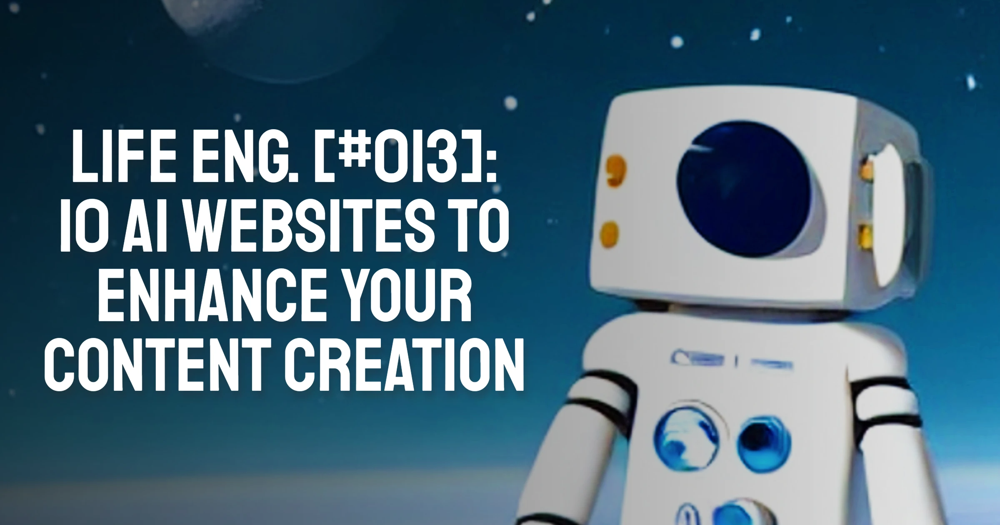

10 AI Websites to Enhance your Content Creation ü߆
It's no secret that content is king. We're writing, reading, and watching more than ever before. The internet has opened up a whole new world of possibilities for marketers to get their message across.
That being said, there are some tools on the web today that will help you make your message stand out even more in this saturated space. In this article, I will go over 10 mind-blowing AI websites that will enhance your content creation.
Starting off with:
1. DeepAI - AI Image Generation
DeepAI lets you generate images with your own creative process by giving simple commands to control a number of variables like object location, type, color, style and more. It's the perfect tool for people who don't have the time or resources to put together their own custom images from scratch but still want their content to look professional and eye-catching for readers!
I currently use it specifically to create the thumbnails for my articles. Yes, including the one you saw in the beginning of the article! I used the prompt “cute white robot in space, digital art” to get this result.
It’s:
✔️ Free
✔️ Easy-to-use
✔️ Customisable
2. Copy.ai
Copy.ai is an amazing tool related to the field of copywriting specifically.
It allows you to simply plug the headline of your blog, for example, and instantly get:
- Some content ideas
- A meta description
- Other recommended meta data
- Some paragraphs written for you
It has a free tier, which allows you to make a limited number of texts per month. But don’t worry! They reload each month.
3. Headlime
Headlime is yet another top copy-writing tool of the future.
Headlime removes the awkward moment where you stand in front of a blank page indefinitely. It provides you with text suggestions as you write, so you only need to write a few sentences and you’ll end up with whole paragraphs - maybe even a whole article.
The text suggestions are so realistic that it will make you question whether even this article was written with Headlime. Or isn’t it?
4. Grammarly
Out of all the tools in this AI recommendation list, you’re probably most familiar with Grammarly.
Grammarly is a cloud-based typing assistant that reviews spelling, grammar, punctuation, clarity, engagement, and delivery mistakes in English language text. It also detects plagiarism. It uses artificial intelligence to identify and search for an appropriate replacement for the located error.
5. Quillbot
Quillbot is the ultimate paraphrasing tool.
Quillbot’s master function is the ability to summarise content. You can input your long-form content and Quillbot will create a short review of the content - containing the most important information.
It can be useful for:
- Making study materials
- Editing ad copy
- Creating scripts for social media videos
6. Copysmith
Copysmith is a tool that helps copywriters with their work. It uses AI to produce amazing results.
It lets you write faster, and it helps you find the things you want to say. You can use it to find inspiration for your writing by searching for words, phrases, or subjects that interest you. You can also use Copysmith to find commonalities among all of your writing projects so that you can easily reuse them in future projects.
7. Github Copilot
GitHub Copilot is a new system that uses artificial intelligence to help coders with their work.
It allows you to write code faster, by providing you with a stream of examples and suggestions that you can use to build on your work. It also helps you stay on track with projects by letting you know when it's time to take a break, or if you've been spending too much time working on one thing.
8. Sonix.ai - Audio and Video to Text
Sonix.ai is an AI tool with an improved freemium model that allows you to turn video ro audio files into raw text.
When can this be useful?
- If you record a podcast and want to have a script afterwards
- If you’re making accessible content for deaf people
- If you want to generate an article out of your video material
9. Typecast
Typecast is a fascinating tool that will enhance your media production.
Remember how Sonix enabled you to create text from video or audio?
Typecast allows for the opposite. You can generate speech (audiobook, podcast, video narration) from your content. You just enter your text, choose the narrators, the voices, the tone, the pitch, and voila! Your audio file is ready and working.
10. Synthesia.ai
Synthesia is a very unique tool in this digital toolkit.
It is the only tool in the list that allows you to create **video** from **text**. The opposite was a bit easier to achieve, but here you need to create whole visuals with AI.
Synthesia provides a “talking head” avatar, often looking like a news anchor, who looks and speaks as if voicing the content you put in, For just 15 minutes, you can create a short video for your social media needs.
Whether you are a content creator or not, you should be amazed by the sheer amount of help one can get with their creator needs. I hope you enjoyed this extensive list ✌️